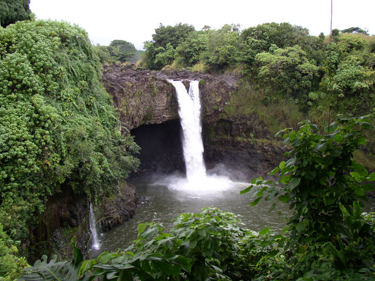

Go back
JES Photo Manipulation
I took part in PARTNERS, which was a programme to help students get into Newcastle University. Whilst there I had to create a photo manipulation program using JES (Jython Environment for Students).
Skills Gained
- Time Management - I had to build this program in 1 week. During this week I was ill, meaning by the time I recovered there were only 3 days left. I had to manage my time during these 3 days wisely, in order to complete the program.
- Research - I had never coded with Jython before, therefore I had to research how to use it.
- Programming - Whilst programming this project, I learnt how to use JES and code with Jython.

